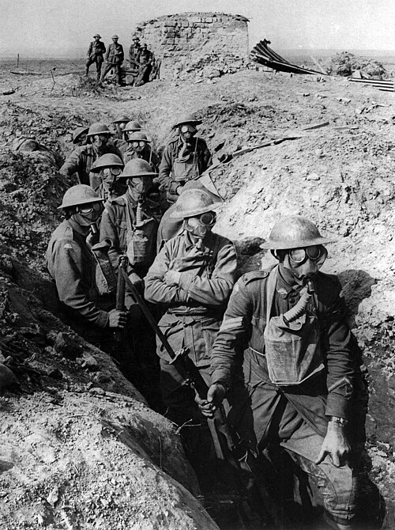

From Dress Uniforms to Trench Coats
Early war uniforms were often brightly colored and ornate, but combat quickly demanded drab, practical clothing that could survive mud, rain, and constant use.
Learn about the evolution of helmets, greatcoats, gas masks, and boots that kept soldiers alive in the trenches and on the battlefields of Europe.
